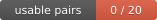

Ölçülen kullanım, API fiyatlarıyla değerlenmiş $1,007.74
(148 istem, 3,705 tur, 2026-08-30 → 2026-09-04).
Aynı iş Lea’dan önce çalışan full config’iyle
$1,370 tutardı.
Üst sınır $1,065 (−51%).
hesabın tamamı →
Alt sınır: dört ölçülmüş turun Lea’ya en az kazandıranı (Kolay bug fix, n=3/3).
Ölçülmüş oran × ölçülmüş kullanım — doğrudan ölçülmüş tasarruf değil.
Bu rakamlar fatura değil: CLI bir Claude Pro aboneliğiyle koşuyor, hiçbir API anahtarı yok,
dolayısıyla hiçbir hesaptan para çıkmıyor. Tükenen şey kota. Dolar, iki config’i
karşılaştırmanın ortak birimi olarak duruyor: token sayıları, 205 ölçüm satırından
türetilmiş API fiyat vektörleriyle değerlendi.
Güncelleme 2026-09-05 20:08 · python savings.py